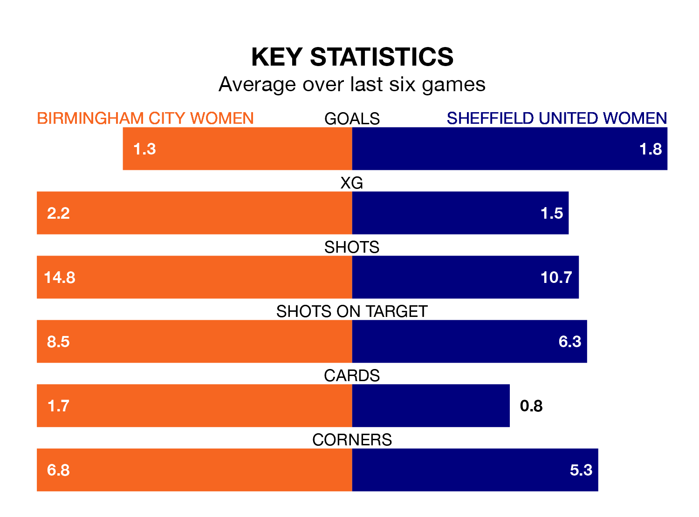

Sunday's early match between Birmingham City Women and Sheffield United Women promises to be one for the neutrals, as two of the FA Women's Championship's most free-scoring sides go head-to-head.
Ahead of the game at St Andrew's, the Blues and the Blades sit third and joint-fourth in the goal-scoring charts, with 32 and 31 goals respectively.
Lily Agg, Charlotte Devlin and Libby Smith lead the way for the home side, having bagged four goals each in their 20 games to date.
And Isobel Goodwin has been the main man in the opponents' penalty box for Sheffield United, with 15 goals.
With Lucy Thomas between the sticks, Birmingham City can rely on one of the league's safest pair of hands. She has kept eight clean sheets in her 20 appearances this season, and only one other 'keeper – Sunderland Women's Claudia Moan – has been able to prevent the opposition scoring on more occasions in the FA Women's Championship.
In Sheffield United's net, Frances Stenson has three clean sheets in 18 games. She has conceded a goal every 70 minutes, 70% more often than the 120 minutes between goals for Thomas.
In the last five years, Birmingham City and Sheffield United have played each other on four occasions. Birmingham City won all of them.
On average, the Blues scored 2.5 goals and the Blades 0.2 in those matches.
Their last meeting was on October 15, when Birmingham City won 4-0 away.
The Blues are in mixed form in the FA Women's Championship, with two wins and a draw from their last six games.
With four wins and two losses over that period, the Blades's form is better – they have taken 12 points from 18, compared to the home side's seven.
Birmingham City are fifth in the table after 20 games, of which they have won 10 and drawn three, earning 33 points.
The visitors are two places behind Birmingham City in seventh, with nine wins and two draws putting them on 29 points.
Birmingham City's last match was on April 14, a 1-0 loss against Crystal Palace Women.
Sheffield United beat London City Lionesses 2-1 last time out, on March 31, with Emma Mitchell (own goal) and Goodwin on the scoresheet.
Updated: 15:40 (UTC), 18/04/24